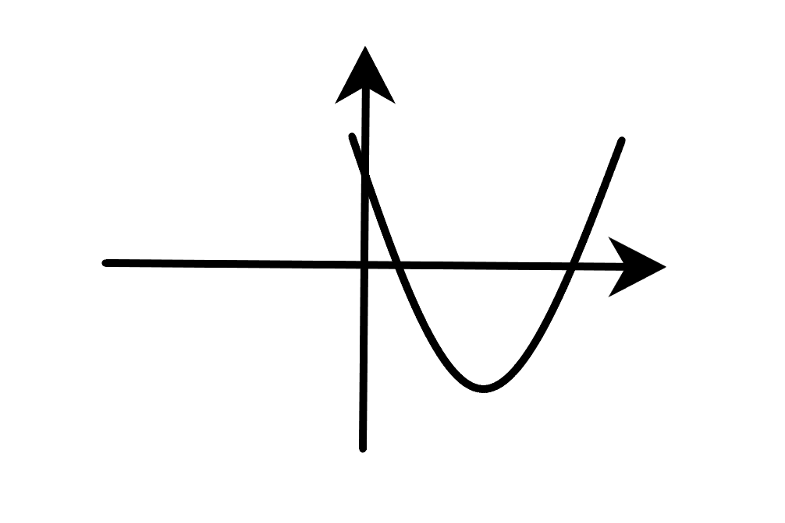
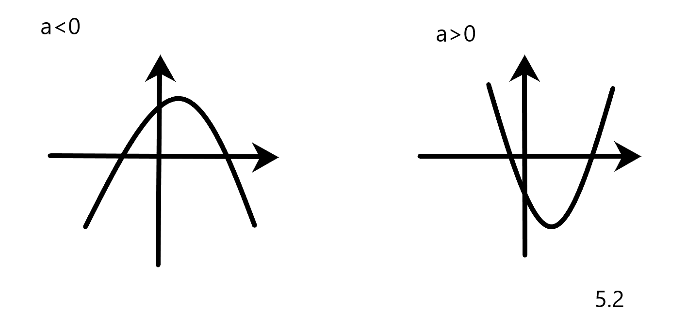
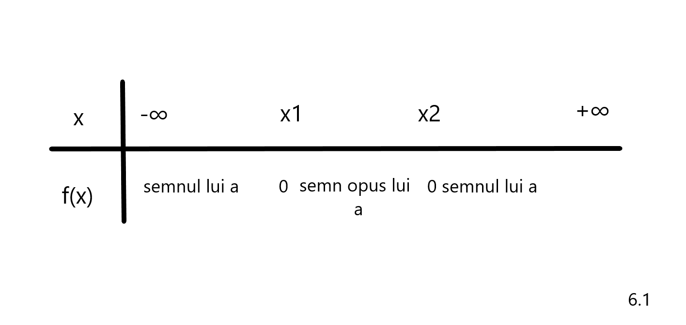
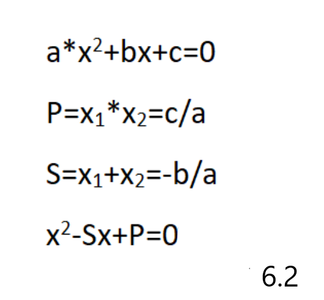

Functia de forma f:R->R, f(x)=ax^2+bx+c, a,b,c ∈ R, a ≠ 0 se numeste functie de gradul II.
Reprezentarea grafica a functiei de gradul II este o parabola:

In functie de valoarea lui a, functia de gradul 2 poate avea valoare de minim sau de maxim:
Fie Δ =b^2-4ac.
- Daca a>0, functia are un punct minim, varful parabolei, V, de coordonate (-b/2a,- Δ /4a).
- Daca a<0, functia are un punct maxim, varful parabolei, V, cu aceleasi coordonate.

In functie de Δ , graficul functiei poate atinge axa Ox in 0,1 sau 2 puncte:
- Δ >0->intersectia dintre grafic si axa Ox are loc in 2 puncte, x1 si x2 x1,2=(-b∓ √ Δ /2a )
- Δ =0->intersectia are loc intr-un singur punct, x=-b/2a.
- Δ <0->intersectia nu are loc.
Semnul functiei de gradul II depinde de a si cele doua solutii pentru intersectia cu axa Ox:

Relatiile lui viete:
Daca x1,x2 sunt solutiile ecuatiei, atunci
